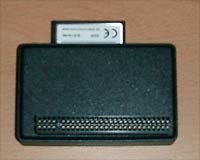
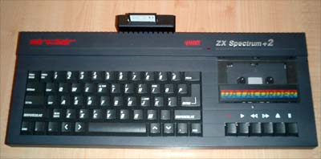

RESEÑA DEL ADAPTADOR IDE A COMPACT FLASH DE JOSÉ LEANDRO.
Uno de los principales problemas a la hora de disfrutar del Spectrum es la tediosa carga desde la cinta de cassette. Si somos los felices poseedores de un +3, los tiempos de carga se alivian bastante. Sin embargo, se trata de un modelo que no estuvo muy extendido en su momento (ya que era competencia directa del CPC6128), y en la actualidad se cotizan bastante caros. En nuestro país el modelo más extendido quizás sea el +2A/B.
Hace tiempo que Garry Lancaster dio forma al proyecto +3E, que consiste en una ROM sustituta de las originales de los modelos +2A, +2B y +3 en la que se incluyen nuevos comandos y la capacidad de manejar dispositivos IDE de una forma sencilla. Así, podemos conectar un disco duro a nuestro Spectrum mediante una interfaz muy sencilla de construir, y acabaremos con nuestros problemas de velocidad de carga (y, por descontado, de espacio de almacenamiento).
El problema es que incorporar un disco duro externo al Spectrum no es muy manejable. Para empezar, necesitaremos una fuente de alimentación extra a la que conectar el disco duro. Si usamos una fuente de alimentación AT o ATX, que suele ser la solución más corriente, tendremos que soportar el ruido infame del ventilador (uno de los encantos del Spectrum es su silencio cuando está encendido). A ello se añade el cable IDE y el propio disco duro en si, que también ocupa su espacio.
| 
|
| El adaptador IDE a Compact Flash de José Leandro |
José Leandro Novellón, todo un mago de la electrónica aplicada al Spectrum, tuvo esas mismas inquietudes, así que se puso a buscar una solución alternativa.
Lo primero que hizo fue adquirir un lector IDE de tarjetas Compact Flash. Como hemos comentado anteriormente, gracias a las ROMS del +3E, el Spectrum puede manejar dispositivos IDE. La cuestión viene a la hora de usar la tarjeta, ¿con qué parametros hay que formatearla? Cuando se trata de un disco duro podemos ver la información de número de cabezas, cilindros y sectores normalmente impresa en el propio disco, pero en el caso de las tarjetas esto no es así.
Conectando el adaptador IDE al PC se puede leer de la BIOS el valor de dichos parámetros. Pese a todo, parece no funcionar bien, así que habrá que ajustarlos un poco más hasta dar con los correctos.
Una vez comprobado que el invento funcionaba, el siguiente reto fue diseñar una placa específica que aunara el interfaz IDE y el adaptador para Compact Flash. Un reto para cualquier mortal, pero para José Leandro esta es la parte en la que se encuentra en su salsa.
| 
|
| El adaptador conectado al +2E |
Como guinda al pastel, José se ofreció a construir una serie de adaptadores bajo pedido. Al final construyó unos catorce interfaces. Las fotos que ilustran este artículo son del adaptador de Miguel G. Prada. Como podéis comprobar, una solución de lo más funcional y discreta que nos permite disfrutar de nuestro Spectrum con unos tiempos de carga ridículos.
El proceso completo lo podréis leer en el artículo que el propio José Leandro escribió para El Trastero del Spectrum.